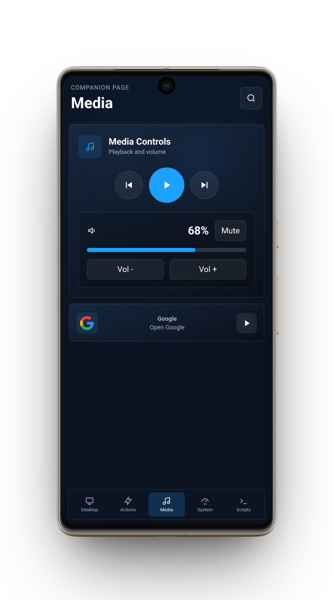
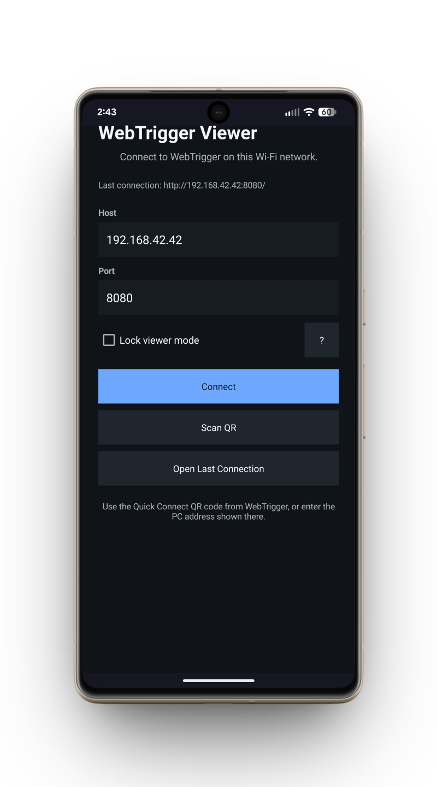
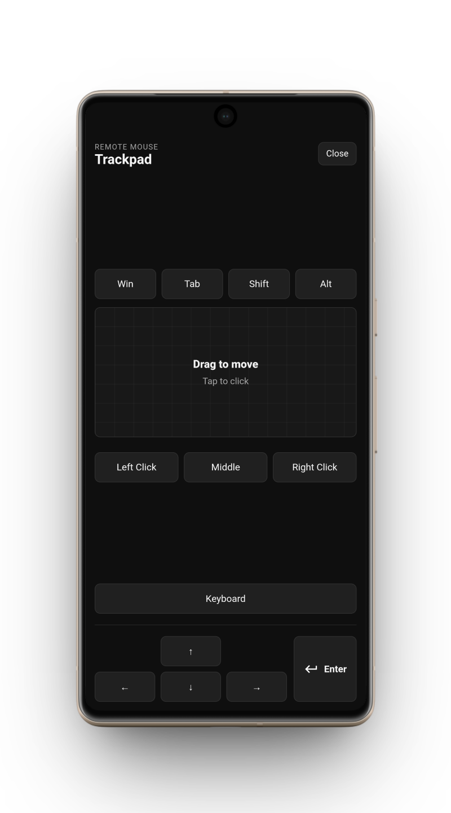

App-Like WebShells
Open your WebTrigger layouts in a cleaner, more focused Viewer experience instead of treating them like another browser tab.
Turn a phone or tablet into an app-like WebTrigger control panel. Viewer gives your WebShells a dedicated feel compared to opening them in a normal browser, with quick reconnects, saved details, and fewer distractions between you and your controls.
Install WebTrigger on your Windows PC first, then connect the Viewer from an Android device on the same local network.


WebTrigger Viewer is for the moments when a normal browser works, but a dedicated Android control surface feels better.
Open your WebTrigger layouts in a cleaner, more focused Viewer experience instead of treating them like another browser tab.
Point Viewer at the PC running WebTrigger and jump straight into your local control interface.
Remember host, port, and login details so repeated sessions do not feel like setup work.
Launch Viewer and reconnect immediately when your saved details are ready to go.
Lock the device onto the WebShell interface when the Viewer is meant to stay mounted, shared, or always ready.
Give spare phones and tablets a useful second life as permanent deskside or wall-mounted panels.
Kiosk mode is an added Viewer feature for setups where the device should stay on the WebShell interface. It is especially useful for wall-mounted tablets, permanently mounted old phones, desk shortcut launchers, and other screens that need to stay ready for one job.
Keep app launchers, scripts, media controls, and live PC status beside your keyboard.
Turn a tablet into a room panel for local tools, shortcuts, dashboards, and system controls.
Trigger actions and layouts from a dedicated Android screen while your main display stays focused.
Control volume, playback, fullscreen, apps, and shutdown from across the room.
Keep job notes, timers, folders, tool references, and PC shortcuts within reach while you work.
Build larger, simpler interfaces for people who need cleaner choices and fewer distractions.


